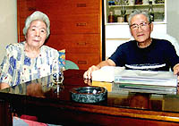
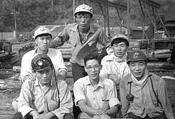
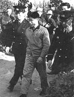

三池を闘った平畑さんの記録（聞き取り年月日場所：2007年9月26日 京都・平畑さん宅）  平畑さん、昭和5年、熊本県上益城郡御船町生まれ。戦時中は産業皇国隊として東京の軍需工場へ狩り出され、 東京大空襲の中を生き延びて帰郷。「大牟田へ行けばなんとかなる」と思って、大牟田の街へ出た。そして、昭和21年2月宮浦鉱へ入社。 16歳のときだった。 父親は昔万田鉱大納屋の役付けだったそうで、その父を知る鉱長が保証人になった。「お前が平畑さんの子供か。お前も職員を目指 して頑張れ」と言われて、少人数を集めた特別教育を受け、「俺もいずれは職員になるのだ」と、その時思ったという。 しかし、坑内夫として3人1組で一晩中危険な所で仕事をしていても歩合給が3厘。請負給でなく固定給ならば2分5厘、これが賃金 差別かと思った。また、職制（係長・係員）の自分らに対する「オイ、お前」という、人を見下げた呼び方に、それはおかしいと思う ようになった。会社に改善を申し入れても聞き入れてもらえず、ならば俺が職場委員長になる、そう思って立候補し一票差で当選。 「それから私に対する会社の見方も変わってきた」という。「資本家は労働者を消耗品としか見ていない」。この頃が労働者として 目覚めてきた時期だったと、平畑さんは振り返る。ややもすると、連日のように繰り広げられる三池労組の職場闘争は、行き過ぎて いる、という会社側等からの批判もあったが、「職場闘争は、自分が楽をしたいからやかましく言っていたのではなく、如何にして 落盤等から身を守り、安全に生産を上げるかが目的。なのに、意見を述べる者が生産疎外者というレッテルを貼られるのはおかしい」 と平畑さんは力説する。  三池闘争に入ってくると、平畑さんは三池労組宮浦支部第5分会長、通松社宅地域分会長の役に就くようになり、職場闘争で会社側 との交渉に明け暮れるようになる。そのうちに三池労組は分裂。第二組合が発生する。
「三池闘争のときは、主人はほとんど闘争本部に泊り込み、家にはほとんど帰ってこなかった。1万円生活は苦しく、20円持って
買物に行く有様だった。我が家は子供が小学生だったからまだ助かったが、高校進学の子供さんを抱える家庭にとっては本当に
苦しかったと思う。」と奥さんは語る。事実、そういう家庭の事情は会社側もよく把握していて、第二組合に引き込む材料とした。  その報復だったのか、三池闘争が終わった翌年の3月、平畑さんは大牟田警察署に逮捕された。逮捕理由は暴力行為等に関する法律 違反や公務執行妨害、建造物侵入の罪だった。23日間勾留された。釈放後はしばらく、三池労組宮浦支部からの要請によって就職対策 部で解雇者の再就職先探しに奔走し、その後自身も京都へ移住し就職したが、その時に懲役1年執行猶予3年の判決を受けたため、苦労 して得た仕事もやめざるを得なくなった。そのようなことから何度も職を変わり、引越しもした。しかし警察は執拗につきまとって きた。直接家に来るのではなく、アパートの家主の所へ聞き込みに来るので、あらぬうわさが立ち、「これには参った」と平畑さんは 苦笑いした。子供は子供で、転校先の学校で言葉がおかしいと言っては「外国人、外国人」と同級生にはやしたてられた。「しかし ね、はっきり言えることは、我々は悪いことをして会社を首になったのではないと、声を大にして言える。仲間みんなのためにいろん な働きをした結果こうなっただけ。自分のクビをかけるつもりで運動しなければ組合運動はできない。前川さんのお父さん、お母さん も同じだったと思うよ。」と平畑さんが言った。
平畑さん一家は昭和36年7月大牟田を去る。「平畑さん、バンザイ、バンザイ」という声が大牟田駅前に響き渡り、三池労組の赤旗
がひるがえった。「あのときのことを思い出すと今でも泣けてきます」と奥さんは涙ぐんだ。「あのときほど仲間を裏切った第二組合
が許せないと思ったことはない。主人に、金が足りんから組合から金を借りれるように口添えしてほしいと頼みにきた人ほど一番に
第二組合へ行った。くやしかった。」と奥さんが言った。
今、私の母も生きていたならこういう風に話をしてくれただろうかと思った。
|